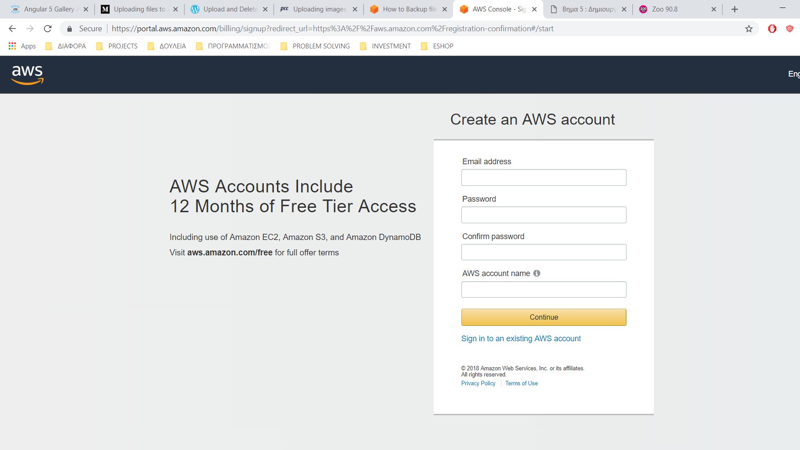
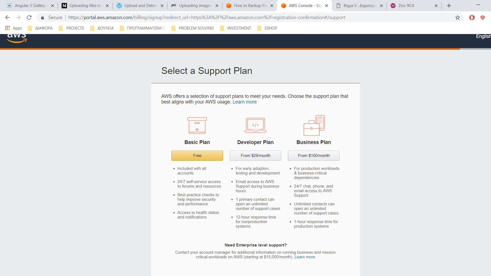
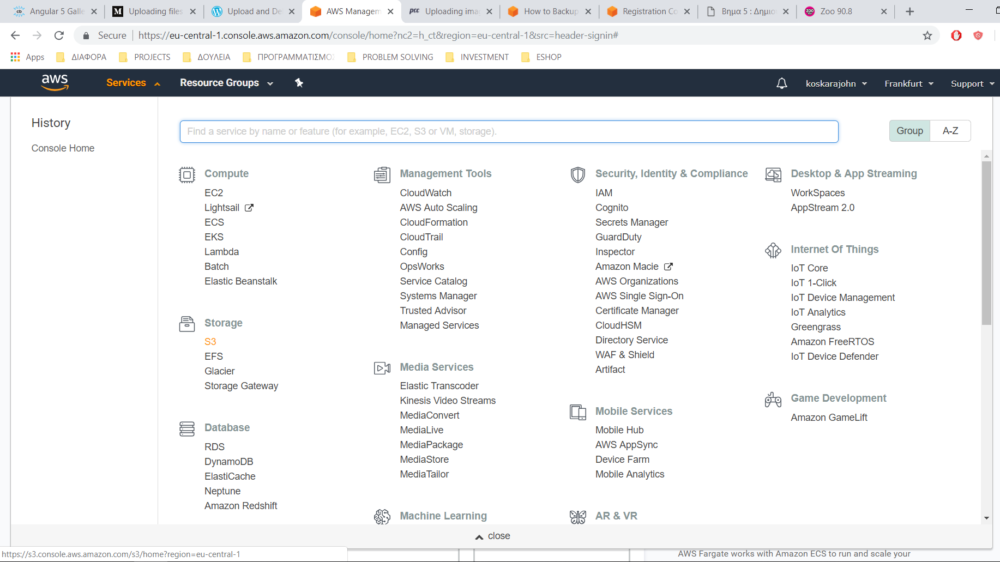
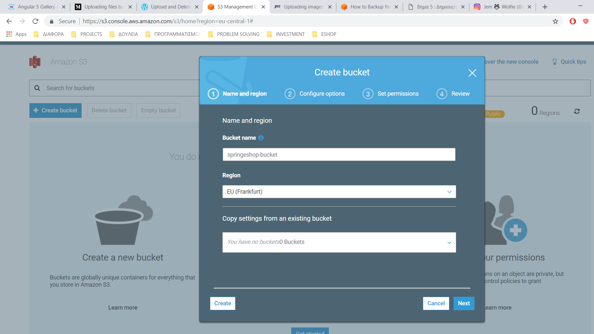
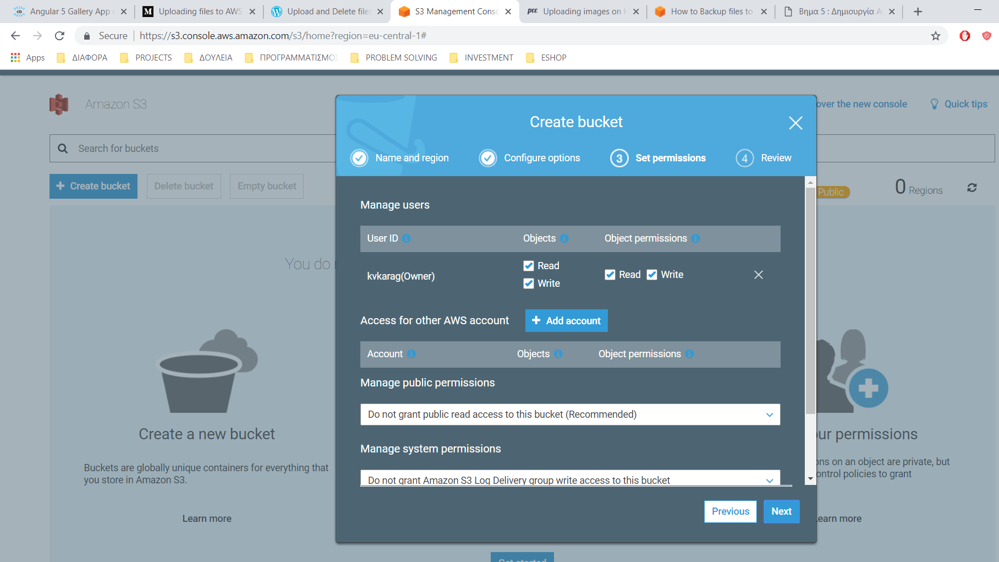
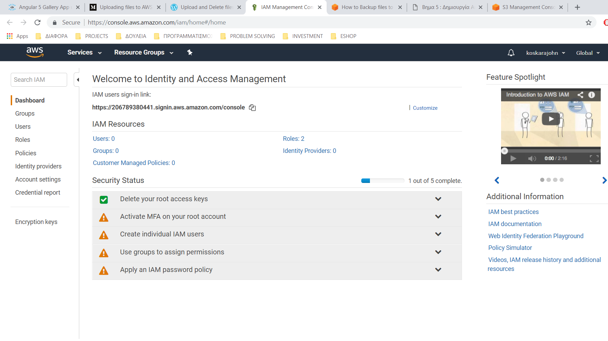
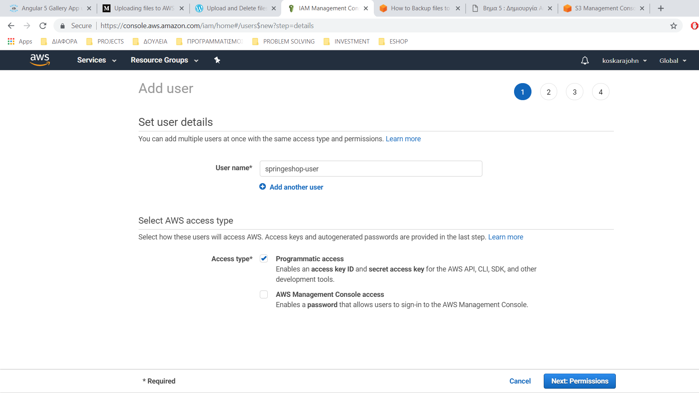
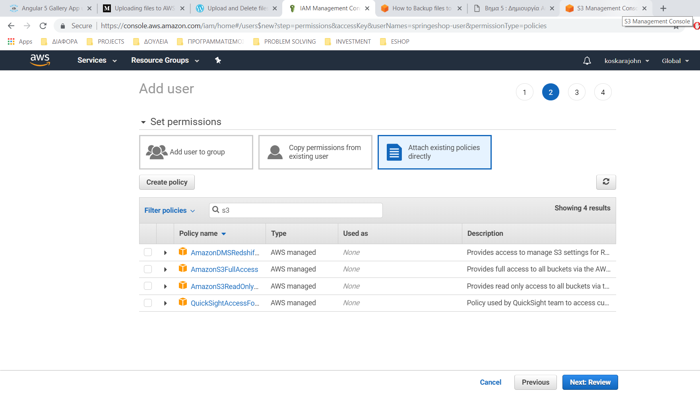
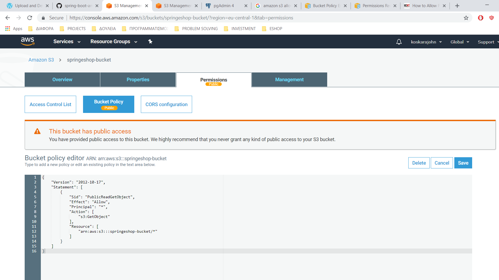

Amazon S3
Οποιεσδήποτε αλλαγές στο file system, διαρκούν στο dyno μέχρι να τερματιστεί ή να επανεκκινηθεί. Κάθε dyno εκκινεί
με ένα καθαρό αντίγραφο του file system, από το πιο πρόσφατο deploy.
Η εφαρμογη θα χρειαστεί, να αποθηκεύσει κάπου φωτογραφίες. Για αυτό το λόγο, θα χρησιμοποίησουμε την υπηρεσία Amazon S3.
Η υπηρεσία είνα δωρεάν για 1 χρόνο.
Δημιουργία λογαριασμού
- Πηγαίνουμε στην ιστοσελίδα του Amazon Web Services και πατάμε Create a Free Account
- Πληκτρολογούμε διεύθυνση email, κωδικό και το όνομα του λογαριασμού

- Συμπληρώνουμε κάποιες πληροφορορίες επικοινωνίας όπως όνομα, τηλέφωνο, πόλη κ.α.
- Χρειάζετει, να δώσετε πιστωτική κάρτα. Δεν θα χρεωθείτε, εκτός αν ξεπεράσετε τα όρια του επιπέδου Free Tier
- Επιβεβαιώνουμε τον αριθμό τηλεφώνου
- Επιλέγουμε το Basic Plan, το οποίο είναι δωρεάν

- Συμπληρώνουμε κάποια πεδία ακόμα, για την εφατομίκευση της εμπειρίας μας
Δημιουργια bucket
- Κάνουμε login στο λογαριασμό μας εδώ
- Πάνω αριστερά, πατάμε στην καρτέλα Services και επιλέγουμε το S3 κάτω από το Storage

- Πατάμε Create Bucket, δίνουμε όνομα springeshop-bucket και επιλέγουμε Region EU(Frankfurt)

- Στην καρτέλα Configure options, πατάμε Next
- Στην καρτέλα Set Permission, πατάμε Next

- Στην καρτέλα Review, πατάμε Create bucket.
Δημιουργια IAM χρήστη
Για να έχουμε πρόσβαση στο bucket και να προσθέτουμε και να ανακτούμε φωτογραφίες προγραμματιστικά, χειάζεται να δημιουργήσουμε
ένα IAM χρήστη.
- Πάνω αριστερά, πατάμε στην καρτέλα Services και επιλέγουμε το IAM κάτω από το Security, Identity, & Compliance
- Στην αριστερή στήλη πατάμε Users

- Πάνω αριστερά πατάμε Add user
- Πληκτρολογούμε User name springeshop-user, επιλέγουμε την επιλογή Programmatic access και πατάμε Next

- Πατάμε Attach existing policies directly, πληκτρολογούμε s3 στο filter policies, επιλέγουμε το AmazonS3FullAccess
και πατάμε Next

- Πατάμε Create user, για να δημιουργηθεί ο χρήστης. Μετά θα εμφανιστούν το access key id και το access key secret, τα οποία θα χρειαστούμε στην εφαρμογή
Bucket policy
Για να εμφανίζει η εφαρμογή τις εικόνες, χρειάζεται να δώσουμε read access στο bucket.
- Στο S3 Management Console, πατάμε στο bucket springeshop-bucket
- Πατάμε στην καρτέλα Permissions
- Πατάμε στην καρτέλα Bucket Policy, προσθέτουμε την ακόλουθη πολιτική και πατάμε Save
{
"Version": "2012-10-17",
"Statement": [
{
"Sid": "PublicReadGetObject",
"Effect": "Allow",
"Principal": "*",
"Action": "s3:GetObject",
"Resource": "arn:aws:s3:::springeshop-bucket/*"
}
]
}
